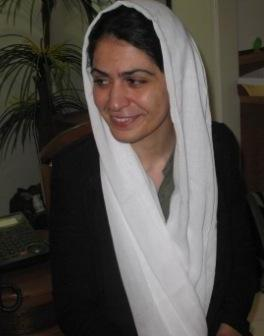
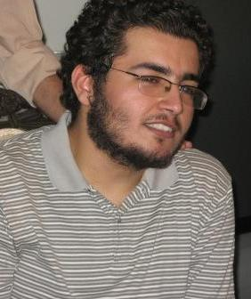
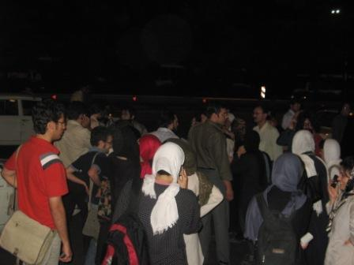
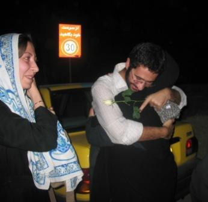
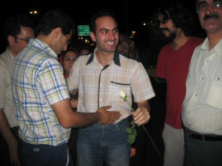

امیر یعقوبعلی، عضو کمپین یکی میلیون امضا که 20 تیرماه هنگام جمع آوری امضاء در پارک اندیشه بازداشت شده بود به همراه بهاره هدایت و اعضای تحکیم وحدت که 18 تیر ماه هنگام تحصن در برابر دانشگاه امیر کبیر بازداشت شده بودند، چهارشنبه شب از زندان اوین آزاد شدند.
عبداله مومني،محمد هاشمی،بهرام فياضي،علي نيكو نسبتي،مجتبي بيات،علي وفقي،مسعود حبيبي و مرتضي اصلاح چي از دیگر آزاد شدگان بودند .حنیف یزدانی و مهدی عربشاهی نیز که هنوز موفق به تامین قرار وثیقه نشده اند طی روزهای آینده با سپردن وثیقه آزاد خواهند شد.
در حالی که نزدیک به 150 نفر از خانواده های بازداشت شدگان، فعالان دانشجویی و اعضای جنبش زنان از ساعت 4 عصر منتظر آزادی عزیزان وهمفکرانشان بودند، ساعت 8 شب ، خودروی هايس مشكي رنگی به سرعت از زندان بيرون رفت و نگهبانان اوین خبر دادند که دانشجوها آزاد شده اند و احتمالا در همین اطراف رها خواهند شد.

جمعیتی که چهار ساعت زیر پل نيمه تمام و جاده هاي خاكي مقابل زندان اوين منتظر بودند، به سرعت به طرف اطراف اوین حرکت کردند تا دانشجویانی را که هر کدام در گوشه ای رها شده بودند پیدا کنند.
تعدادی از خانواده ها نیز که مطمئن نبودند فرزندانشان جزو آزاد شدگان باشند مقابل در اوین منتظر ماندند.
عبداله مومني، که مقابل هشت بهشت پیاده شده بود. خبر ازادی بقیه را تایید کرد:«بچه ها همه داخل هایس بودند. بهاره هدایت که چادر هم سرش کرده بودند را احتمالا کمی بالاتر پیاده کرده اند.»
پسران عبدلله که این یک ماه سخت بی تاب و نگران پدر بودند بالاخره لب به لبخند باز کردند

بهرام فیاض بخش که در جاده های اوین رها شده بود، وقتی مادرش را دید چنان او را در آغوش کشید که اشک همه سرازیر شد

و محمد هاشمی که در میدان صنعت پیدایش کردند. مثل همیشه خندان بود و مقاوم.

مسعود حبيبي می گفت:« به هر كدام مان پنج هزار تومان براي كرايه تاكسي و يا خريد كارت تلفن داده اند.»
با این حال مادرها هنوز نگران بودند و می گفتند تا بچه هایشان را نبینند و از آزادی شان مطمئن نشوند آرام نمی گیرند. پس از یک ساعت نگرانی و جستجوی همه خیابان های اطراف اوین و سعادت آباد بود که خبر پیدا شدن هر 8 نفرشان دهان به دهان چرخید و جمعیت استقبال کننده در چند گروه راهی خانه های دانشجویان شد. این دید و بازدیدها تا ساعت 1 نیمه شب ادامه داشت و دانشجویان بازداشتی از زندان می گفتند و انفرادی و بازجوی هایی که تمامی نداشت.
اين دانشجويان از جمله تحصن كنندگان مقابل دانشگاه پلي تكنيك بودند كه خواستار آزادي همكلاسي هايشان بودند و امير يعب علي نيز هنگام جمع آوري امضا در پارك اندشه دستگير و 29 روز را در زندان سپري كرد. علاوه بر دو دانشجویی که منتظر تامین وثیقه هستند. احمد توکلی، احمد قصابان و احسان منصوری از دانشجویان پلی تکنیک که به بهانه چاپ مطالب موهن در نشریات دانشجویی بازداشت شده اند، هنوز در زندان اوین بازداشت هستند و آخرین خبرها حاکی از آن است که تا تکمیل تحقیقات در زندان خواهند ماند.